PT MANAGER
契約者用
食事と運動を記録する
アプリの使い方
毎日の食事・運動・体重を残しておくためのアプリです。
残した記録は、あなたのトレーナーが見て、指導に使います。
スマホの操作に慣れていなくても大丈夫です。この冊子のとおりに進めれば使えます。
はじめてお使いになる方へ ／ 画面の絵つき
分からないことがあれば、遠慮なくトレーナーにお尋ねください。
この冊子の中身
- このアプリは何をするもの？
あなたがすること／トレーナーがすること
- はじめの準備
ホーム画面に追加する／ログインする／パスワードを変える
- 画面の見取り図
カレンダー／その日の画面
- 食事を記録する
4つの入れ方／手で入れる／文章から／写真から／成分表示から
- 「登録待ち」と出たとき
合計に入らない理由と、そのあとどうなるか
- 体重・運動・写真を記録する
- 合計の見かた
- 1日を確定する
- トレーナーからのコメント
- AIの評価
- 写真は7週間で消えます
- 体重の推移を見る
- AIを使う・使わない
- あとから直せる期間
- 困ったときは
1このアプリは何をするもの？
食べたもの・動いたこと・体重を、その日のうちに残しておくアプリです。
カロリー計算アプリではありません。トレーナーと二人で使うための記録帳だと思ってください。
あなたがすること、トレーナーがすること
このアプリでいちばん大事な決まりごとは、「何を決めるのは誰か」がはっきり分かれていることです。
| 決めること | 決める人 | なぜ |
|---|
| 何を食べたか |
あなた |
あなたにしか分かりません |
| 何グラム食べたか |
あなた |
同じく、あなたにしか分かりません |
その食材の100gあたりの
カロリー・栄養値 |
トレーナー |
調べる人が決めるものだからです |
栄養の数字を、あなたが入力する必要はありません
「白米100gが何kcalか」を調べて入れる必要はありません。
食材の名前と、食べた量（g）だけを入れてください。
残りはアプリとトレーナーがやります。
記録すると、どうなるか
- その日の合計カロリーとP（たんぱく質）・F（脂質）・C（炭水化物）が自動で出ます
- 目標との差が見えます
- トレーナーが同じ画面を見て、コメントを書いてくれます
- 体重の変化がグラフになります
完璧に書けなくても大丈夫です
量が分からない、名前が正確でない、そういう日があって当たり前です。
だいたいで残しておくほうが、何も残さないよりずっと役に立ちます。
分からないところは、トレーナーが見て直せます。
2はじめの準備
ここは最初の1回だけです。5分ほどで終わります。
2-1 アプリを開けるようにする
このアプリは、App Store や Google Play から入れるものではありません。
トレーナーから届いたURLをブラウザで開いて、ホーム画面に置いて使います。
そうすると、ふつうのアプリと同じように、アイコンから開けるようになります。
iPhone（Safari）の場合
- トレーナーから届いたURLを、Safariで開きます。
- 画面のいちばん下にある、四角から矢印が出ているマーク（共有ボタン）を押します。
- 出てきた一覧を上にたどって、「ホーム画面に追加」を押します。
- 右上の「追加」を押します。
- ホーム画面に「PT Manager」のアイコンができます。次からはここから開いてください。
Chrome ではなく Safari で開いてください（iPhoneの場合）
iPhoneでは、Safari以外のブラウザからだと「ホーム画面に追加」が出ないことがあります。
うまくいかないときは、URLをSafariで開き直してみてください。
Android（Chrome）の場合
- 届いたURLを Chrome で開きます。
- 右上の点が3つ縦に並んだマークを押します。
- 「ホーム画面に追加」（または「アプリをインストール」）を押します。
2-2 はじめてのログイン
トレーナーから 契約者ID と 最初のパスワード を教えてもらってください。
メールアドレスは使いません。
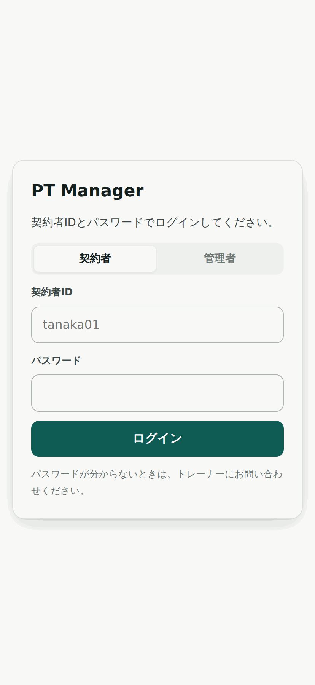
ログインの画面。「契約者」のほうが選ばれていることを確かめてください。
- 上の 契約者 と 管理者 のうち、「契約者」が選ばれていることを確かめます。
- 契約者ID の欄に、教えてもらったIDを入れます（例: tanaka01）。
- パスワード を入れます。
- 「ログイン」を押します。
2-3 パスワードを自分のものに変える
はじめてログインすると、必ずこの画面が出ます。先へ進むには変更が必要です。
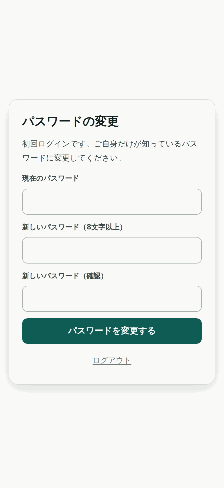
最初のパスワードは、トレーナーも知っている状態です。ここで自分だけのものに変えます。
- 現在のパスワード … いま使った、教えてもらったパスワードを入れます。
- 新しいパスワード … 8文字以上で、自分で決めたものを入れます。
- 新しいパスワード（確認） … 同じものをもう一度入れます。
- 「パスワードを変更する」を押します。
変えたパスワードは、トレーナーにも分かりません
忘れてしまったときは、トレーナーに言えば入れ直してもらえます。
無理に思い出そうとしなくて大丈夫です。
3画面の見取り図
3-1 カレンダー（最初に出る画面）
ログインすると、まずこの画面が出ます。日付を押すと、その日の画面に入ります。
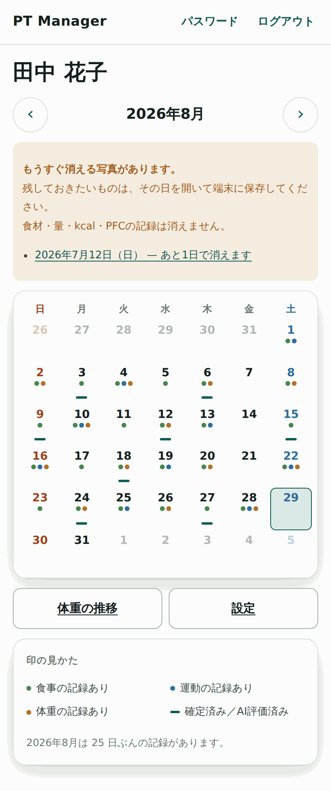
ひと月ぶんのカレンダー。上の ‹ › で前の月・次の月へ動けます。
マスの下にある印の意味
| 印 | 意味 |
|---|
| 緑の丸 | 食事の記録があります |
| 青の丸 | 運動の記録があります |
| 茶色の丸 | 体重の記録があります |
| 下の横線 | 1日を確定した／AIの評価がある |
カレンダーにカロリーの数字は出しません
スマホの幅にひと月ぶんの数字を詰めると、字が小さくなって読めなくなるためです。
数字は、その日の画面を開けば大きく出ます。
3-2 その日の画面
カレンダーの日付を押すと、この画面になります。上から順に並んでいます。
| 並び | 中身 |
|---|
| からだ | 体重・体脂肪率 |
| 食事 | 朝食・昼食・夕食など。いくつでも作れます |
| この日の合計 | kcalとPFC、目標との差 |
| 運動 | 種目・時間・内容 |
| 写真 | その日に撮った写真 |
| トレーナーのコメント | トレーナーが書いた言葉（あなたは読むだけ） |
| AIの評価 | ボタンを押すとAIが書く講評 |
| 1日を確定する | 「今日はもう食べません」の区切り |
上のほうにある ‹ › で、前の日・次の日へ移れます。
‹ カレンダー を押すとカレンダーに戻ります。
 その日の画面を上から3つに切って、左から順に並べたものです。実際にはスクロールして見ます。
その日の画面を上から3つに切って、左から順に並べたものです。実際にはスクロールして見ます。
4食事を記録する
ここがいちばんよく使うところです。入れ方は4つあります。
どれを使っても、記録される中身は同じです。やりやすいものを選んでください。
4-1 まず「食事」を1つ作る
- その日の画面で + 食事を追加 を押します。
- 「食事1」という名前で作られます。名前の部分を押すと、「朝食」「昼食」など好きな名前に書き換えられます。
4-2 食材を入れる — 4つの入口
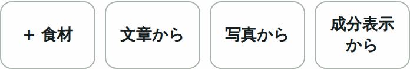
それぞれの食事の下に並んでいるボタンです。
| ボタン | こんなとき |
|---|
| + 食材 | 名前と量が分かっている。いちばん確実 |
| 文章から | 「白米180gと鶏むね肉150g」のように、まとめて打ちたい |
| 写真から | 料理の写真から、だいたいの中身を出したい |
| 成分表示から | 市販品を食べた。袋に栄養成分表示が書いてある |
「文章から」「写真から」「成分表示から」が出ていないときは
AIの利用に同意していないためです。ボタンは + 食材を追加 の1つだけになります。
使いたい場合は、この冊子の 13章「AIを使う・使わない」 を見てください。
同意しなくても、手で入れればすべて同じように記録できます。不利になることはありません。
4-3 ①「+ 食材」で手で入れる
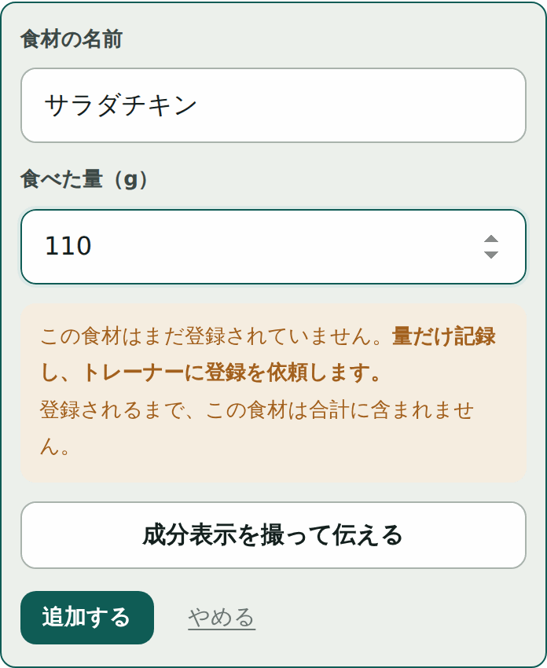
入れるのは名前と量だけです。
- 食材の名前 を入れます。打っている途中で、似た名前が候補として出ることがあります。同じものならそれを選んでください。
- 食べた量（g） を入れます。
- 「追加する」を押します。
似た名前の候補が出たら、なるべくそれを選んでください
「とりむね」「鶏むね肉」「鶏胸肉」を別々に登録してしまうと、記録がバラバラになります。
候補を選べば、同じ食材としてまとまります。
4-4 ②「文章から」
食べたものを、ふだんのことばで書きます。
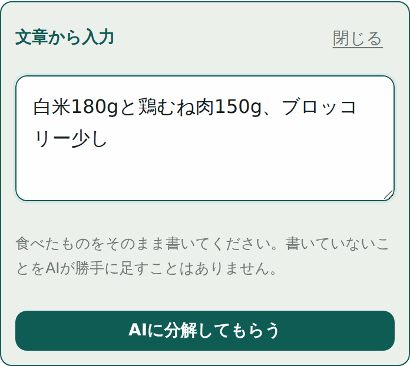
そのまま書いて「AIに分解してもらう」。
- 文章から を押します。
- 食べたものを書きます（例:「白米180gと鶏むね肉150g、ブロッコリー少し」）。
- 「AIに分解してもらう」を押します。
- 食材ごとに分かれて出てきます。量が空の欄があれば、そこに入れてください。
- 要らないものは 外す で消せます。
- 「◯件を追加する」を押すと記録に入ります。
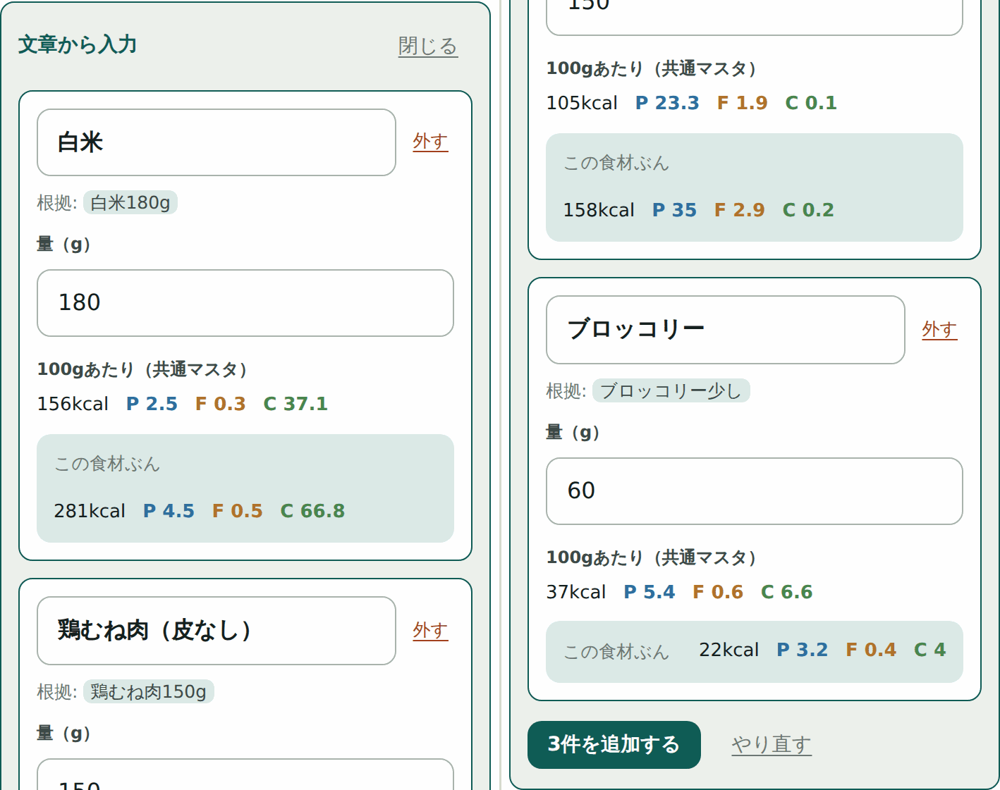
分解された結果。「根拠」に、あなたの文章のどこを読んだかが出ます。
書いていないものをAIが足すことはありません
「根拠」の欄に、あなたが書いた言葉がそのまま出ます。
ここに出ていないものは記録に入りません。勝手に「サラダも食べたはず」などと足されることはありません。
4-5 ③「写真から」
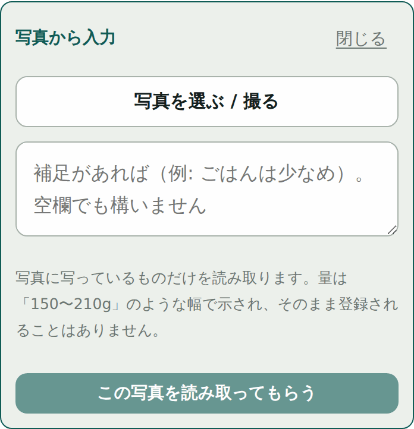
写真を選んでから「この写真を読み取ってもらう」を押します。
- 写真から を押します。
- 「写真を選ぶ / 撮る」でその場で撮るか、保存してある写真を選びます。
- 補足があれば書きます（例:「ごはんは少なめ」）。空欄でも構いません。
- 「この写真を読み取ってもらう」を押します。
- 出てきた量はあくまで見立てです。「150〜210g」のような幅で示されます。実際の量と見比べて直してください。
写真から出た量は、そのまま信じないでください
写真では、茶碗の大きさも、下に隠れているぶんも分かりません。
2割くらいはずれるものだと思って、必ず自分の目で直してください。
直せば、それが正しい記録になります。
4-6 ④「成分表示から」
コンビニやスーパーの市販品を食べたときは、これがいちばん正確です。
袋やカップに書いてある「栄養成分表示」を撮ります。
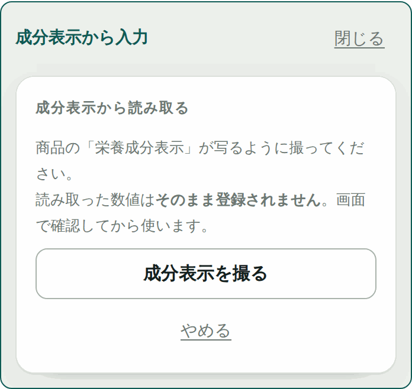
「成分表示を撮る」を押して、表示の部分が写るように撮ります。
- 成分表示から を押します。
- 「成分表示を撮る」を押して、表の部分が全部写るように撮ります。
- 読み取った数字が出ます。袋に書いてある数字と見比べてください。
- 合っていれば 「この値を使う」 を押します。
- 商品名と、1回分のグラム数が自動で入ります。半分だけ食べたときは量を直してください。
- 「この食材を追加する」を押します。
「1食あたり」と「めん・かやくあたり」に気をつけて
カップ麺などは、表が2つ並んでいることがあります。数字が2割ちがいます。
読み取った値が思ったより小さい／大きいときは、どちらの欄を読んだかを確かめてください。
画面の「読んだ欄」に、どこを読んだかが書いてあります。
読み取った数字は、その場では合計に入りません
その数字は「候補」としてトレーナーに送られます。
トレーナーが確かめて登録すると、そのときはじめて、あなたの記録の数字になります。
それまでは次の章の「登録待ち」の状態です。
5「登録待ち」と出たとき
食材を入れたのに、カロリーではなく 「栄養値は登録待ち」 と出ることがあります。
失敗ではありません。正常な動きです。
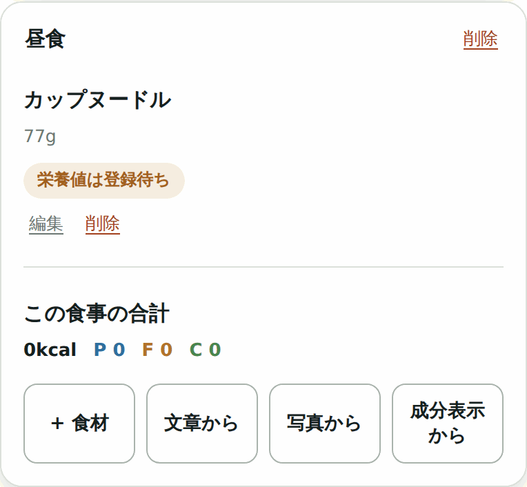
「栄養値は登録待ち」と出ている状態。この食事の合計は0kcalのままです。
なぜこうなるのか
その食材が、まだトレーナーの一覧（食品マスタ）に無いということです。
100gあたりの栄養値を決めるのはトレーナーなので、決まるまでは数字を入れません。
あなたがすることは、ありません
食材を入れた時点で、トレーナーに自動で「登録してください」と伝わっています。
連絡し直す必要はありません。トレーナーが登録すると、あなたのその日の記録に自動で数字が入ります。
入れ直す必要もありません。
合計には入りません（わざとそうしています）
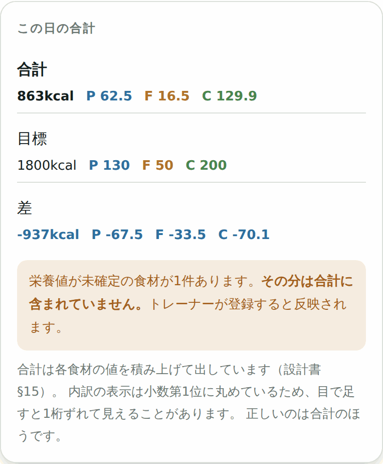
登録待ちがある日は、合計の下にこの知らせが出ます。
0kcalとして足してしまうほうが危ないからです
分からない食材を0kcalで足すと、実際より少ない合計が出ます。
その数字を見て「今日は足りていない」と判断すると、間違った方向に進んでしまいます。
含まれていないことをはっきり出すほうが安全です。
急いでいるときは
どうしてもその日のうちに合計を出したいときは、
すでに登録されている似た食材（「鶏むね肉」など）で代わりに入れておく手もあります。
そのぶんは正確ではありませんが、目安にはなります。
6体重・運動・写真を記録する
6-1 体重（からだ）
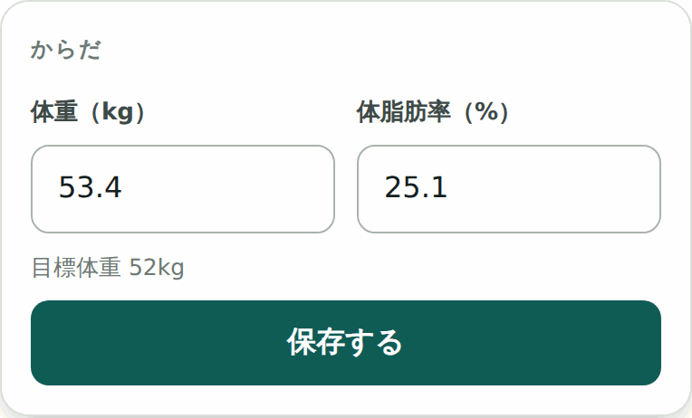
体重と体脂肪率。どちらか片方だけでも構いません。
- その日の画面のいちばん上、「からだ」の欄に数字を入れます。
- 「保存する」を押します。「保存しました。」と出れば完了です。
毎日でなくて構いません
測った日だけで大丈夫です。ただし測る時間はそろえたほうが、変化が読み取りやすくなります
（朝起きてトイレのあと、など）。
6-2 運動
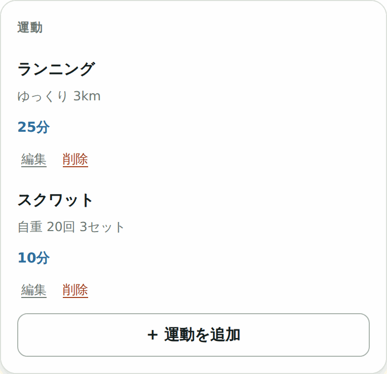
種目・時間・内容。時間は空でも構いません。
- + 運動を追加 を押します。
- 種目（例:「ベンチプレス」「ランニング」）を入れます。
- 時間（分）は分かれば入れます。空でも構いません。
- 内容に、重さや回数などを自由に書きます（例:「60kg 10回 3セット」）。
- 「保存する」を押します。
6-3 写真
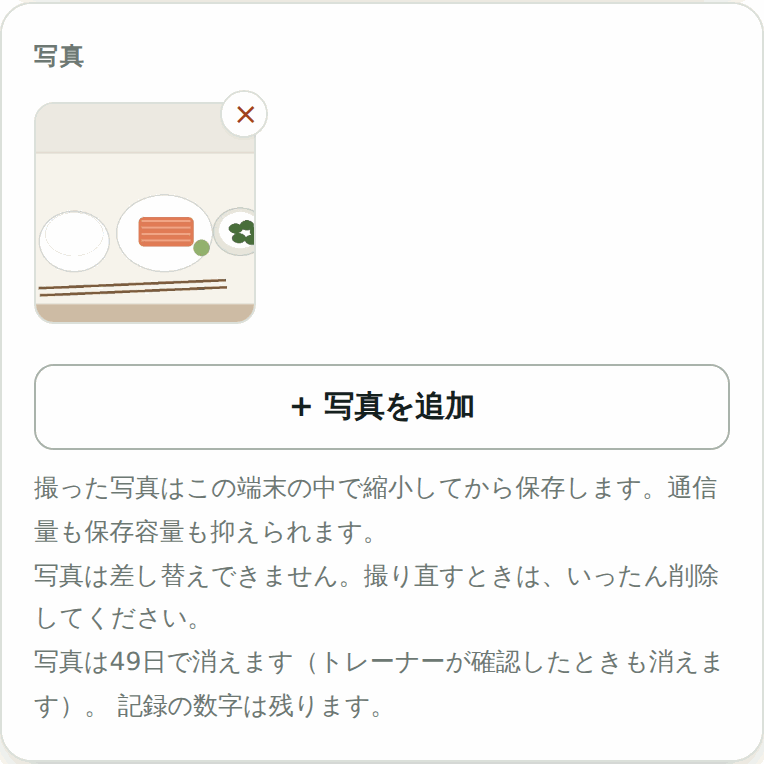
その日の写真。押すと大きく表示されます。
- + 写真を追加 を押します。
- 撮るか、保存してある写真を選びます。
- 自動で小さくしてから保存されます。通信量も保存の場所も節約できます。
写真は差し替えられません
撮り直したいときは、いったん × で削除してから、もう一度追加してください。
写真は7週間で消えます
くわしくは 11章「写真は7週間で消えます」 を見てください。
食材・量・kcal・PFCの記録は消えません。消えるのは写真だけです。
7合計の見かた
その日の合計。3行の意味を覚えておくと読みやすくなります。
| 行 | 意味 |
|---|
| 合計 | その日に記録したものを全部足した値 |
| 目標 | トレーナーが決めた、その人の目標値 |
| 差 | 合計 − 目標。マイナスなら足りていない、プラスなら超えています |
P・F・C とは
| P | たんぱく質（Protein）。肉・魚・卵・大豆・乳製品に多い |
| F | 脂質（Fat）。油・脂身・ナッツ・菓子に多い |
| C | 炭水化物（Carbohydrate）。ごはん・パン・麺・いも・果物に多い |
目で足すと1ちがう、ということがあります
画面に出ている食材ごとの数字は、小数第1位までに丸めて表示しています。
そのため、並んでいる数字を自分で足すと、合計と1くらいずれて見えることがあります。
アプリは丸める前の値で計算しているので、正しいのは合計のほうです。
81日を確定する
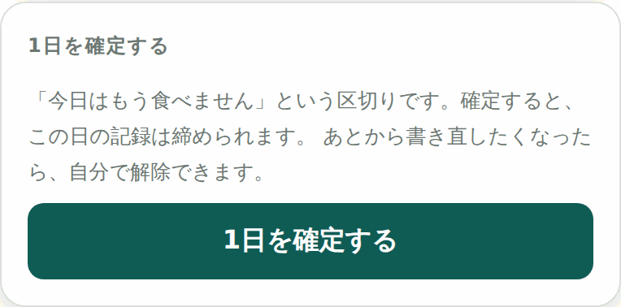
その日の画面のいちばん下にあります。
「今日はもう食べません」という区切りです。押すと、その日の記録が締められます。
確定すると
- その日の食事・運動・体重・写真が編集できなくなります
- 「AIに評価してもらう」のボタンも消えます（10章）
- カレンダーのその日に、下線の印が付きます
- トレーナーに「この日はもう書き終わった」と伝わります
やり直したくなったら
自分で解除できます。確定したあとの画面に 確定を解除する が出ます。
解除すれば、また書き直せます。何度でも構いません。
押さなくても記録は残ります
確定は義務ではありません。押さなくても、書いたものはそのまま残りますし、トレーナーも見られます。
「区切りをつけたい人のためのボタン」だと思ってください。
解除できる期間には限りがあります
古い日は、自分では解除できなくなります（初期の設定では7日前まで）。
そのときはトレーナーに言ってください。14章にくわしく書いてあります。
9トレーナーからのコメント
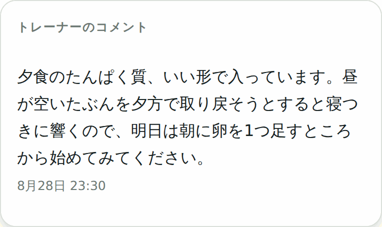
その日の画面の下のほうに出ます。
トレーナーが書いた言葉です。あなたは読むだけで、書いたり消したりはできません。
コメントが無い日は、この欄自体が出ません
空っぽの欄が毎日並んでいても仕方がないので、コメントがある日にだけ出るようにしています。
確定したあとにコメントが付くこともあります
あなたが1日を確定したあとに、トレーナーが読んで書くほうが自然だからです。
確定した日も、ときどき開いて見てみてください。
10AIの評価
 「AIに評価してもらう」を押すと、その場で短い講評が出ます。
「AIに評価してもらう」を押すと、その場で短い講評が出ます。
使い方
- その日の記録を入れ終えます。
- 「AIに評価してもらう」を押します。
- 数秒待つと、短い文章が出ます。
- 気に入らなければ 「もう一度書いてもらう」で書き直せます。削除 で消せます。
AIに送っているもの
送っているのは、その日の合計と目標の数字だけです。
| 送るもの | 送らないもの |
|---|
合計（kcal・P・F・C）
目標（kcal・P・F・C）
運動の分数
食事の記録件数
|
お名前
契約者ID
体重・体脂肪率
ほかの日の記録
|
AIから見れば、誰のものか分からない数字の組です。
確定した日は、ボタンが出ません
1日を確定すると、「AIに評価してもらう」のボタンは消えます。
すでに書いてもらった文章は、そのまま残って読めます。
書き直したいときは、いったん確定を解除してから押してください。
読むときに気をつけてほしいこと
医療の判断ではありません
AIが書くのは、食事と運動の記録にもとづく参考意見です。
病気の診断でも、治療の助言でもありません。体調に不安があるときは、必ず専門の方にご相談ください。
病名や、体に負担のかかるやり方（極端に食べないなど）が混ざった文章は、
アプリが自動で見つけて、画面に出さないようにしています。
そのときは「表示していません」という知らせが出ます。もう一度押してみてください。
トレーナーのコメントとは別ものです
上にあるのが人が書いた言葉、下にあるのがAIが書いた文章です。
大事なのは上のほうです。AIの文章は、そのあとの参考として読んでください。
11写真は7週間で消えます
アプリに保存できる場所には限りがあります。写真は撮った日から49日（7週間）で自動的に消えます。
消える2日前に知らせが出ます
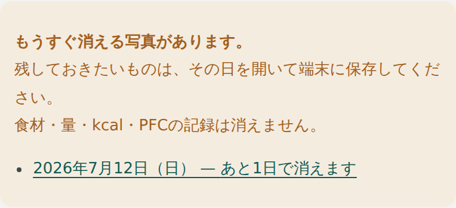
カレンダーの上に出ます。日付を押すと、その日に飛べます。
- カレンダーを開くと、もうすぐ消える写真がある日が一覧で出ます。
- 残しておきたいものがあれば、その日付を押します。
- 写真を押して大きくしてから、長押しして端末に保存してください。
トレーナーが確認したときも消えます
トレーナーがその日の食事・写真・運動を見終えて「確認しました」を押すと、
その日の写真はそのとき消えます。49日を待たずに消えることがあるのは、このためです。
消えるのは写真だけです
食材の名前・食べた量・kcal・P・F・C・運動・体重・コメントは、すべて残ります。
写真は数字を確かめるための材料なので、確かめ終われば役目が終わります。
12体重の推移を見る
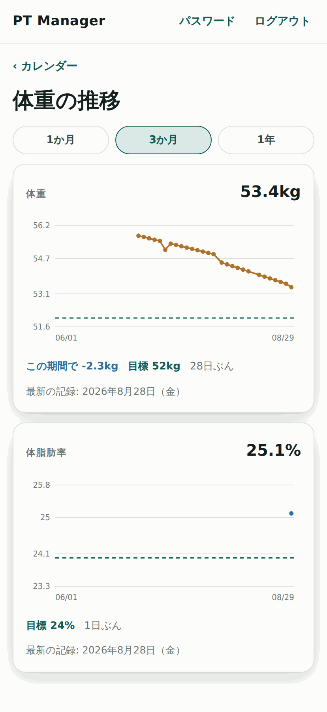
カレンダーの下にある「体重の推移」から開けます。
- カレンダーの下の 体重の推移 を押します。
- 上の 1か月 3か月 1年 で見る幅を変えられます。
グラフの中の点線は目標値です。「この期間で −2.3kg」のように、変化の量も出ます。
日々の上下は気にしすぎないでください
体重は、水分や食事の残り具合で1日1kgくらい動きます。
見るべきは、線全体がどちらを向いているかです。
13AIを使う・使わない
AIを使うかどうかは、あなたが決めます。トレーナーが代わりに決めることはできません。
 カレンダーの下の「設定」から開けます。
カレンダーの下の「設定」から開けます。
読んでから決めてください
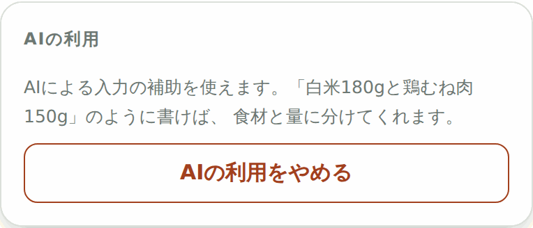
「AIの利用について読む」を押すと、この説明が出ます。
| 送られるもの | あなたがその場で書いた食事の文章、または撮った写真 |
| 送られないもの | お名前・契約者ID・体重・体脂肪率・目標値・ほかの日の記録 |
| 送り先 | GoogleのAIサービス |
無料の枠で使っているため
送った内容が、GoogleのAIの改善に使われる可能性があります。
これは推測ではなく、Googleが公表している条件です。知ったうえで決めてください。
使わない場合
不利になることはありません
AIのボタンが出なくなるだけです。手で入力すれば、カロリー計算も記録もすべて同じように使えます。
あとからやめられます
同じ画面の AIの利用をやめる でいつでも取り消せます。
取り消しても、それまでに記録したデータが消えることはありません。
14あとから直せる期間
自分で直せるのは、初期の設定では「7日前まで」です。
この日数はトレーナーが人ごとに変えられます。自分の日数はトレーナーに聞いてください。
期間を過ぎるとどうなるか
その日の画面を開くと、上に次のような知らせが出て、入力欄が押せなくなります。
自分で修正できるのは7日前までです。ここから先はトレーナーにご連絡ください。
- 見ることはいつでもできます。読めなくなるわけではありません
- 直したいときは、トレーナーに言えば直してもらえます
まだ先の日付も入れられません
明日以降の日を開くと「まだ先の日付です。当日になったら記録できます。」と出ます。
食べる前に書いておく、ということはできません。
なぜ期限があるのか
ずっと前にさかのぼって書き換えられると、トレーナーが見た記録と実際の記録が食い違ってしまいます。
指導の土台になる記録なので、あとから静かに変わらないようにしてあります。
15困ったときは
パスワードを忘れました。
トレーナーに連絡してください。新しいパスワードを入れ直してもらえます。自分で再設定する仕組みはありません。
ログインできますが「このアカウントはまだ登録されていません」と出ます。
アプリを使う権限が設定されていない状態です。トレーナーに伝えてください。
「このアカウントは現在ご利用いただけません」と出ます。
アカウントが一時的に止められています。記録は消えていません。トレーナーに確認してください。
「栄養値は登録待ち」のままで、なかなか数字が入りません。
トレーナーがまだ登録していない状態です。依頼はすでに届いています。急ぐときは声をかけてください。登録されれば、あなたが何もしなくても数字が入ります。
「文章から」「写真から」のボタンが出ません。
AIの利用に同意していないためです。13章を見てください。同意していても出ない場合は、アプリ側の設定がまだの可能性があるので、トレーナーに伝えてください。
写真が勝手に消えました。
撮ってから49日たったか、トレーナーが「確認しました」を押したかのどちらかです。11章を見てください。記録の数字は消えていません。
合計と、並んでいる数字を足した値が合いません。
表示を小数第1位で丸めているためです。正しいのは合計のほうです。7章を見てください。
昨日の記録を直したいのに、入力欄が押せません。
その日を確定している可能性があります。画面の下の「確定を解除する」を押してから直してください。それでも押せなければ、直せる期間を過ぎています（14章）。
電波の無いところでも使えますか。
画面を開くことはできますが、記録の保存には通信が必要です。「通信状態を確認してください」と出たときは、電波の届くところでもう一度お試しください。
機種を変えました。どうすればいいですか。
新しい端末で同じURLを開き、ホーム画面に追加して、同じ契約者IDとパスワードでログインしてください。記録はすべて残っています。
ほかの契約者の記録が見えてしまうことはありますか。
ありません。画面で隠しているのではなく、データを預かっている側で、他の人の記録は取り出せないようにしてあります。
この冊子に無いことは、遠慮なくトレーナーにお尋ねください。
うまく書けない日があっても構いません。続けることのほうが大事です。